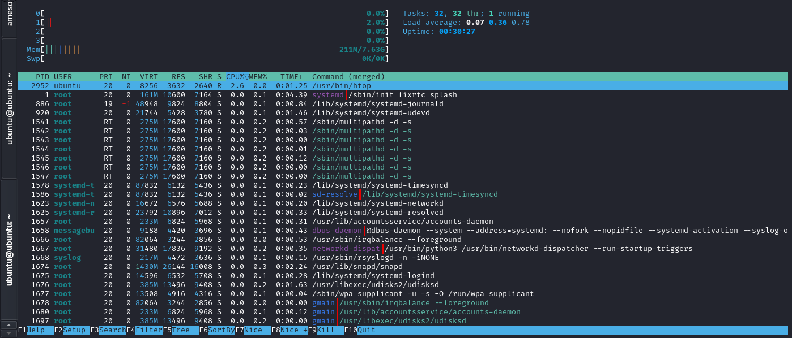
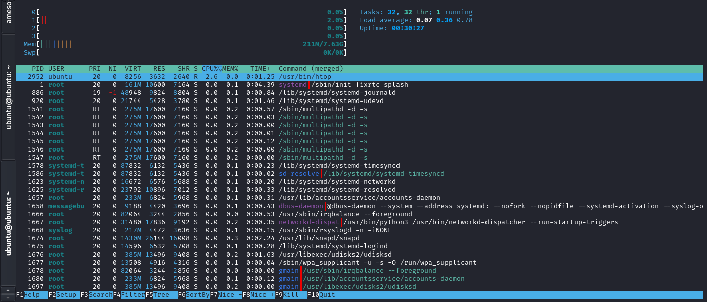

Raspberry Pi 4
Aluminium Case
Power Supply
Raspberry Pi Imager
Operating system image
Installation tutorial
QUMO microSD 16gb
Adapter MicroSD to USB
Flash drive 4 gb (not required)
WiFi network using Linux CLI
WiFi network using Linux CLI: `netplan` for Ubuntu
 
